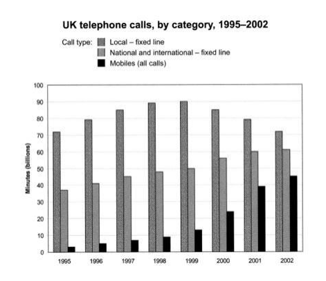

Tip: 前期啥话说不出来就往死里背，背到见到啥都能说。
- 背诵：李俊 30 天资料 + 杨帅每日英语 + 杨帅口语素材 Part1 & Part2 + SIMON 写作范文。
- Retell：
Day1: 2024.12.16
- Recite: Success in Life
- Recite: 杨帅 退休养老
- 老托福 PartC-1: Community Service
Recite: Success in Life
主题：个人
Success means different things for different people. Some may equate it with fame, some with wealth and still some with accomplishments.
For me, it means fulfilling one's dreams. Whatever your dreams are, you have a goal there and then focus all your attention on it.
Dreams bring you hope and happiness. In the process of struggling for it, you cry, sweat, complain or even curse, but the joy of harvesting makes you forget all the pains and troubles you have gone through. So an old proverb says that the sweetest fruit is one that has undergone the bitterest ordeal.
There are several keys to success. First, your goal must be practical and practicable. If you set your goal too high, chances are that you will never attain it. Next, you have to make a plan of doing it. You can take some steps to realize it. Since the process is quite tough, you need to be diligent, patient and persevering.
Even if you meet with some difficulties or frustrations, just take them in your stride. You can always tell yourself that there is nothing insurmountable. With this will and determination, success is sure to wait for you at the end of the tunnel!
Recite: 杨帅 2024.12.16 退休养老
主题：个人
It's incredibly important for people to start saving for retirement early.
The earlier they begin, the more time their money has to grow through compound interest.
- Compound interest：复利，即利息也有利息
Even small, regular contributions can accumulate into a significant amount over time.
- Regular contribution 这里表示定期存款，contribution 这里表示的是投入。
Retell: 老托福 PartC-1 Community Service
主题：社会
Community service is an important component of your study(education here) at our school.
We encourage all of you(all students) to volunteer at least one community activity before you(they) graduate.
You education majors may(might) be interested in this program(it)
because it's a good chance(it offers the opportunity to do some teaching --- that is)
to tutor(tutoring) in math and English.
- Major 这里表示主修为 Education 的同学
- Tutor sb in sth 表示为 sb 辅导 sth
You'd have to volunteer for two hours each/a week for a semester.
You can choose to tutor English, math, or both.
Half-hour lessons are fine, so you can take(could do) a half hour lesson(of each subject) each day for two days a week.
Professor Dodge will be the(act as a) mentor for(to) the tutors ---
he is(will be) available to help with lesson plans or (to) offer activity suggestions.
Prof. Dodge has office time(hours) every Tuesday and Thursday afternoon.
- Office hours 特指开放给学生咨询的时间
You can sign up (for the program) to(with) him, and begin (the) tutoring in the next week.
- 这里 with 表示在 Prof. Dodge 的协助下完成
- 下周 Next week 不需要介词
I'm sure you'll enjoy this community service, and have(gain) valuable
experience at the same time.
It's also good for the(It looks good on your) resume ---
showing that you have(have had) experience with child and (that you care about) community service.
If you would like to sign up or have any questions, please stop by Prof. Dodge's office.
Retell: SIMON Part1-4
The bar chart compares the time (that) 10 to 15 year old(10 to 15-year-old) teenagers in the UK spending(spend) on
chatting on the internet and playing on games console(game consoles).
- 年龄区间：
10 to 15-year-old做形容词，10 to 15-year-olds做名词。
Overall, playing computer games is marginally more popular than chatting on the internet.
However, the trends are completely different(completely different trends can be seen) when(if) we take a look at the gender(specific figures for boys and girls).
It is clear that 10 to 15-years-old boys(boys aged between 10 and 15)
favor playing on games console
than(over) chatting on the internet.
While there are roughly 85% of boys playing(play) computer games every day,
there are only 55% of them chatting(chat) on the internet.
(Furthermore,) the majority of boys play computer games for more than an hour each day,
and 10% of them play for(do this activity) more than 4 hours.
- Favor A than B 是错误的！正确搭配是用 Over。
- 表示百分比没必要用 There are 。
- of them 可以省略，原因在于前面已经提到了 of boys。
Day2: 2024.12.17
- Recite: Learning is a Lifelong Career
- Recite: 杨帅英语
- Recite: 杨帅 Part1 feeling bored
Recite: Learning is a Lifelong Career
As food is to the body, so is learning to the mind. Our bodies grow and muscles develop with the intake of food. Likewise, we should keep learning day by day to maintain our mental power and expand our intellectual capacity.
Constant learning supplies us with fuel for driving us to sharpen our power of reasoning, analysis, and judgement. Continuous learning is the best way to keep pace with the times in the information age.
It is a common misunderstanding to regard school as the only place for the acquisition of knowledge. On the contrary, learning should be an endless process, from the cradle to the grave. With the world changing so fast, to stop learning for just a few days will make a person lag behind.
Lack of learning will inevitably lead to the stagnation of the mind, or even worse, its fossilization. Therefore, to stay mentally young, we have to take learning as a lifelong career.
Recite: 杨帅 四天工作制
I think governments should encourage companies to adopt a four-day work week but not force them.
Research has shown that shorter work weeks can increase productivity and reduce stress.
This could also provide workers with more time for their personal lives.
Recite: 杨帅 Part1 Feeling Bored
Do you often feel bored?
Yeah, absolutely. I believe everybody does, right?
Boredom is a kind of feeling that we get all the time, so I suppose I feel bored just from time to time in a day. I mean, sometimes in the mid-afternoon, I just feel like if I'm not super busy and if I have nothing better to do, I just feel like, oh my God, what am I supposed to do right now?
So yeah, of course, I believe I'm the same as everybody else. I get bored all the time.
When was the last time you felt bored?
Oh, it was actually just about 5 minutes ago, when I was waiting out there for you to come out and get me. Because I didn't have my phone and there was no one next to me that I could talk to. So I felt super bored.
what do you do when you feel bored?
Well, in most cases, when I feel like I have nothing better to do, I just, well, I just use my phone to read some news, you know, there's an app on my phone called Jin Ri Tou Tiao today's Headlines or something like that. This is my favorite app because I can read a lot of news articles on various things, on entertainment, on sports, politics, and so on. So yeah, these are the things I do to drive away boredom.
Recite: SIMON Part1-5
The chart below shows the total number of minutes (in billions) of telephone calls in the UK, divided into three categories, from 1995-2002.

The bar chart compares the amount of time spent by people in the UK on three different types of phone call between 1995 and 2002.
It is clear that calls made via local, fixed lines were the most popular type, in terms of overall usage, throughout the period shown. The lowest figures on the chart are for mobile calls, but this category also saw the most dramatic increase in user minutes.
In 1995, people in the UK used fixed lines for a total of just over 70 billion minutes for local calls, and about half of that amount of time for national or international calls. By contrast, mobile phones were only used for around 4 billion minutes. Over the following four years, the figures for all three types of phone call increased steadily.
By 1999, the amount of time spent on local calls using landlines had reached a peak at 90 billion minutes. Subsequently, the figure for this category fell, but the rise in the other two types of phone call continued. In 2002, the number of minutes of national / international landline calls passed 60 billion, while the figure for mobiles rose to around 45 billion minutes.
Recite: SIMON Part2-2
Question: Several languages are in danger of extinction because they are spoken by very small numbers of people. Some people say that governments should spend public money on saving these languages, while others believe that would be a waste of money. Discuss both these views and give your opinion.
It is true that some minority languages may disappear in the near future. Although it can be argued that governments could save money by allowing this to happen, I believe that these languages should be protected and preserved.
There are several reasons why saving minority languages could be seen as a waste of money. Firstly, if a language is only spoken by a small number of people, expensive education programs will be needed to make sure that more people learn it, and the state will have to pay for facilities, teachers and marketing. This money might be better spent on other public services. Secondly, it would be much cheaper and more efficient for countries to have just one language. Governments could cut all kinds of costs related to communicating with each minority group.
Despite the above arguments, I believe that governments should try to preserve languages that are less widely spoken. A language is much more than simply a means of communication; it has a vital connection with the cultural identity of the people who speak it. If a language disappears, a whole way of life will disappear with it, and we will lose the rich cultural diversity that makes societies more interesting. By spending money to protect minority languages, governments can also preserve traditions, customs and behaviors that are part of a country’s history.
In conclusion, it may save money in the short term if we allow minority languages to disappear, but in the long term this would have an extremely negative impact on our cultural heritage.